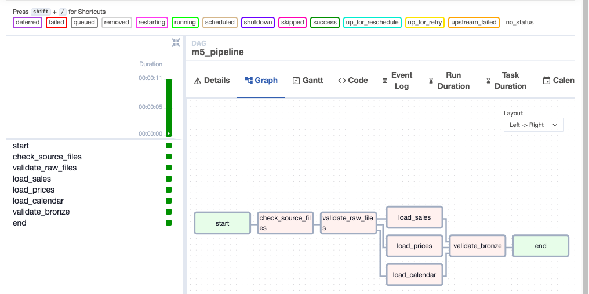

Apache Airflow runs locally via Docker Compose (LocalExecutor). The
m5_pipeline DAG calls the existing Python validation code,
then stages parallel Bronze load markers for sales, prices, and calendar.
Defined in airflow/dags/m5_pipeline_dag.py. After validation,
the three Bronze staging loads run in parallel.
All eight tasks completed successfully (~11 seconds). Parallel loads fan out
after validation, then rejoin at validate_bronze.

m5_pipeline after a successful manual trigger.
cd airflow docker compose up -d
airflow / airflow
m5_pipeline → unpause → Trigger DAG.# useful commands docker compose ps docker compose logs -f airflow-scheduler docker compose down
| Task | Role |
|---|---|
check_source_files |
Confirm the three raw CSVs exist under data/raw/ |
validate_raw_files |
Schema / size / row-count checks + write ingestion manifest |
load_sales / load_prices / load_calendar |
Parallel Bronze staging markers (Databricks write comes next) |
validate_bronze |
Confirm all three staging markers exist for the batch |